Home
本文转载自： https://zhuanlan.zhihu.com/p/264911739
源码随后附上，稍安勿躁
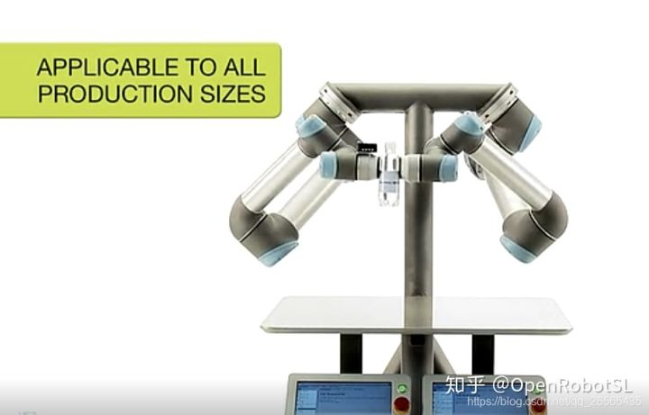
实际上，如果就把双臂中的每个臂当做单个的机械臂进行规划，那么用matlab进行双臂建模就没有太大必要，只需要对每个单臂进行单独规划即可。但是，如果涉及到双臂之间的协同轨迹规划，如上图所示，这时用matlab进行双臂建模仿真就会显得事半功倍。本文先只介绍双臂在matlab中的正运动学建模，后续会补充在matlab中如何进行双臂轨迹规划。
PUMA560构型双臂
熟悉Peter大神工具箱的都知道，该工具箱使用dh连杆建模，建立双臂模型，需要建立腰关节连杆，并将两个单机械臂组合到腰关节上。如下图所示，本文针对puma560构型双臂采用==改进DH建模==（具体建模步骤见博客机器人学回炉重造（1）：正运动学、标准D-H法与改进D-H法的区别与应用（附ABB机械臂运动学建模matlab代码）），此时腰关节连杆坐标系就是基坐标系X0Y0Z0，此时的肩关节坐标系X2Y2Z2就是单臂机器人的基坐标系，然后就从肩关节坐标系开始建立单臂的DH坐标系，也可以认为是单独的腰关节连杆坐标系+单臂的DH坐标系，需要注意的是建立整体DH坐标系时腰关节与肩关节之间需要加-pi/2角度偏置，目的是将puma560构型的机械臂垂下去，下图中的虚线X2即为不加偏置的肩关节坐标系，实线X2即为加了偏置角度后的肩关节坐标系,d=肩宽/2。
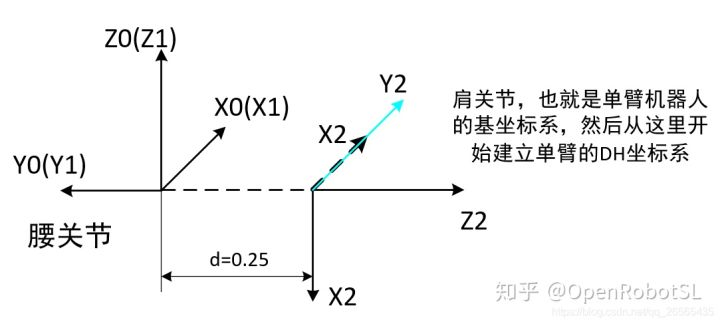
对应的matlab正运动学仿真如下所示：
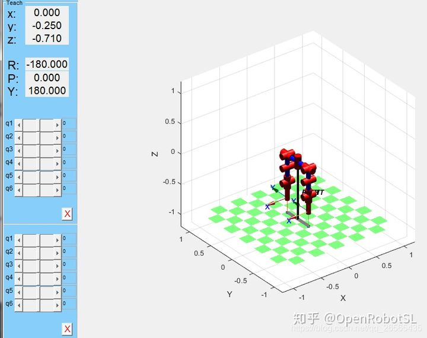
腰关节与肩关节之间也可以不加偏置角度，这样的话，两个坐标系之间的转换就可以画成如下所示。
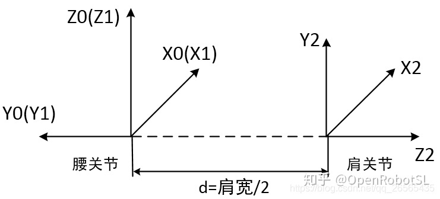
对应的matlab正运动学仿真如下所示：
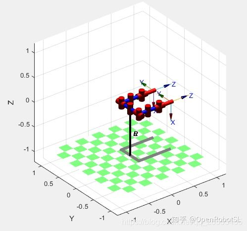
UR构型双臂
本文UR采用标准DH建模，建模过程全网可搜，标准DH坐标系建立如下。
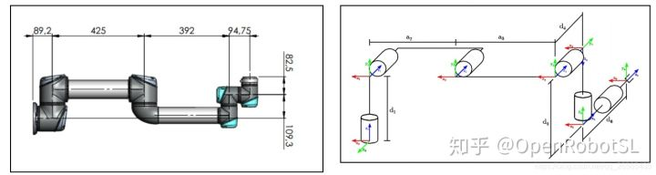
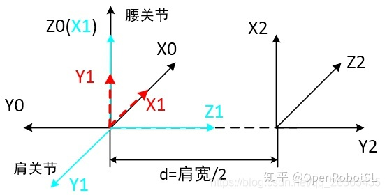
分析上图，黑色坐标系X0Y0Z0是世界坐标系，也可认为这是腰关节坐标系，红色虚线坐标系X1Y1Z1是肩关节坐标系（也就是UR的基坐标系{0}），此时腰关节与肩关节不存在角度偏置，matlab仿真建模就是如下所示
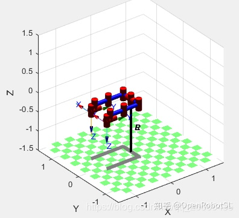
亮蓝色实线坐标系X1Y1Z1是加了pi/2偏置角度后的肩关节坐标系，matlab建模仿真如下所示
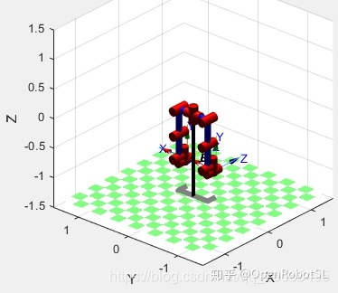
如何进行轨迹仿真
进行轨迹仿真的最重要一点就是，如何将世界（全局坐标系）坐标系下（也为腰关节坐标系）的轨迹映射到肩关节坐标系（机械臂的基坐标系）下，弄明白这一点，使用matlab进行双臂轨迹算法验证就简单很多了~
以PUMA560腰关节与肩关节有-pi/2角度偏置的双臂构型为例，如下图所示，
世界（全局，也为腰关节）坐标系下的位姿表示为$^0_{n}T$，这就是我们算法验证时所给定的轨迹位姿，都是相对于世界坐标系的；现在的问题就是，将轨迹位姿映射到肩关节（机械臂基坐标系）下，也就是求$^2_{n}T$。这个就很简单了，即$^2_{n}T=inv(^0_{2}T)^0_{n}T$。$^0_{2}T$即为单臂基坐标系相对于腰关节坐标系的姿态变换矩阵，根据腰关节和肩关节之间的坐标变换，可以分析得出，腰关节坐标系先绕X1轴（自己的）旋转pi/2，再绕动轴Z1旋转-pi/2，最后再沿着动轴Z1移动d长度，故$^0_{2}T=trotx(90)trotz(-90)*transz(d)$。按照上述步骤即可将全局坐标系下的位姿映射到单臂局部坐标系下了。
同理，UR也可如此。
最后就可以愉快的画轨迹了~（当然 过程挺艰辛）
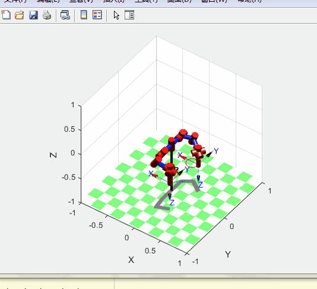
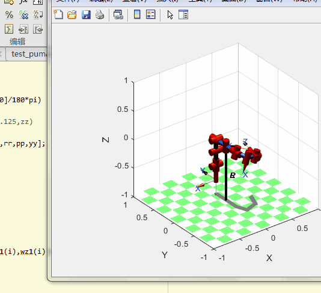
也可以做双臂协同
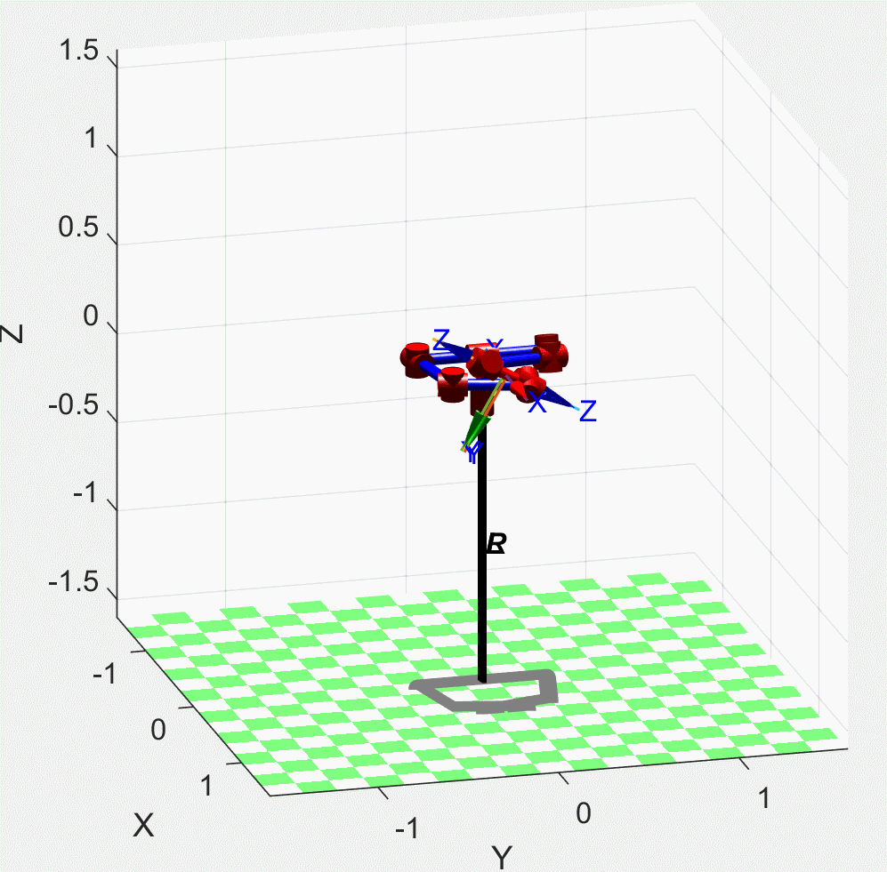
做了几个demo，测试一下
双臂协同，摆花手，开汽车
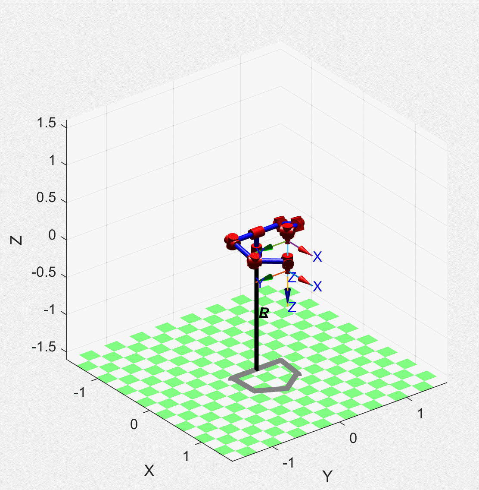恒定工作空间
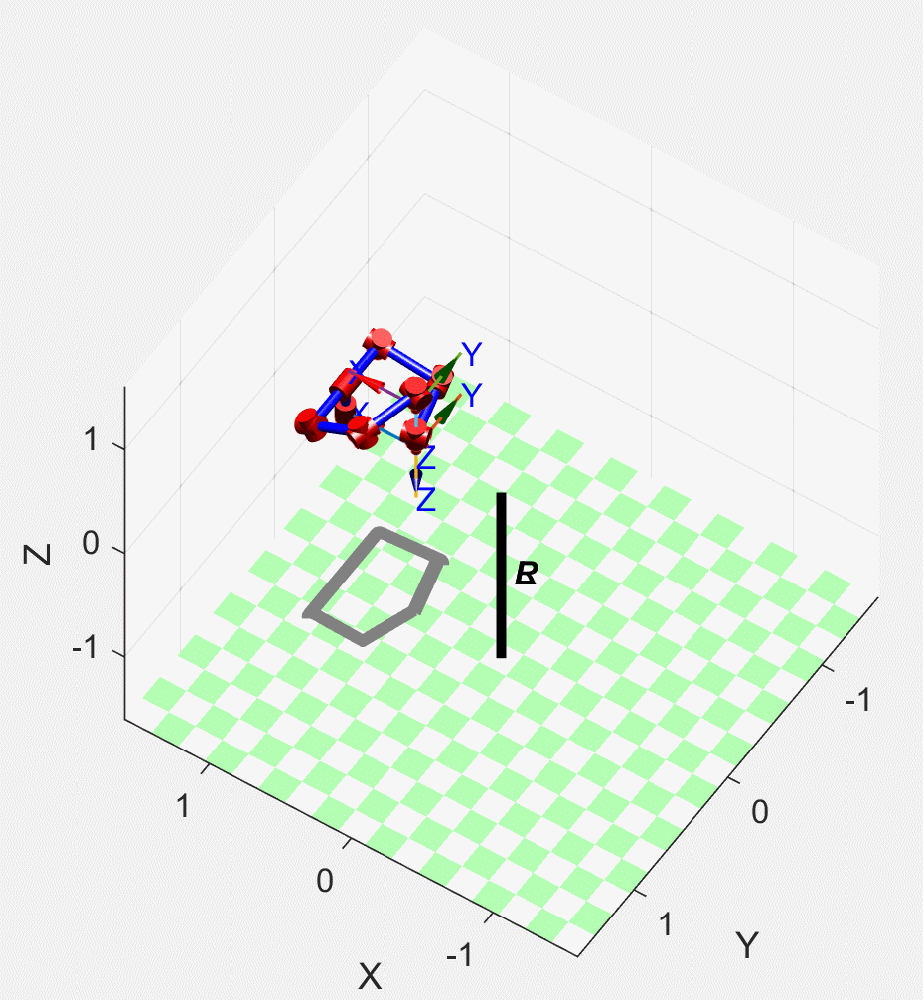
爱的魔力转圈圈
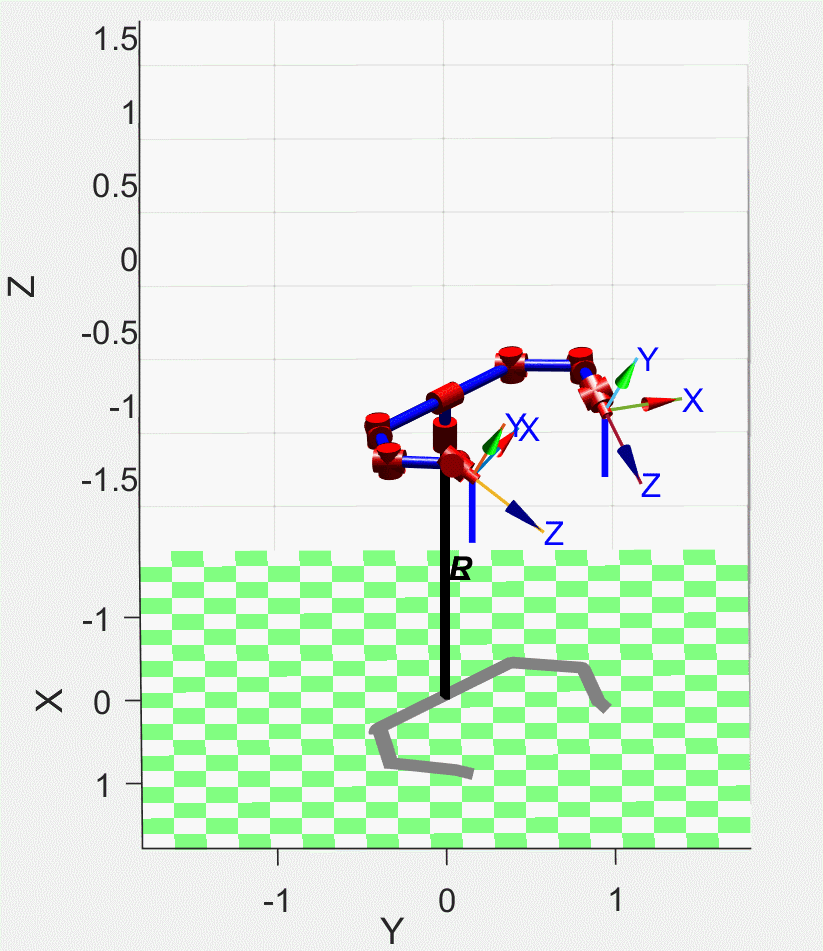
双臂任务规划
工业6轴构型，用的是改进DH建模方法
源代码
OpenRobotSL/Dual_Arm_RobotUR 6轴构型，用的是标准DH建模方法
======================================================================
我的测试结果及程序
下面是我测试的代码：